# embedded communications ## **Design of Autonomous Systems** ### csci 6907/4907-Section 86 ### Prof. **Sibin Mohan** --- embedded systems need to, - **communicate** - **interface** with various elements --- ## communications and I/O --- ## communications and I/O - the **physical** world → sensors and actuators --- ## communications and I/O - the **physical** world → sensors and actuators - **computers** for programming - of the embedded system or - for data transfer --- ## communications and I/O - the **physical** world → sensors and actuators - **computers** - programming embedded system - for data transfer - with **other** embedded systems/nodes --- ## communications and I/O - the **physical** world → sensors and actuators - **computers** - programming embedded system - for data transfer - with **other** embedded systems/nodes - **handheld** devices --- ## communications and I/O - the **physical** world → sensors and actuators - **computers** - programming embedded system - for data transfer - with **other** embedded systems/nodes - **handheld** devices - with the **internet** - either public or - access back end servers --- ## communications and I/O - the **physical** world → sensors and actuators - **computers** - programming embedded system - for data transfer - with **other** embedded systems/nodes - **handheld** devices - with the **internet** - either public or - access back end servers - **satellites**? --- large number of communication standards and I/O interfaces! --- ## communication standards & I/O interfaces 1. serial (UART) → e.g., RS 232 --- ## communication standards & I/O interfaces 1. serial (UART) → e.g., RS 232 2. synchronous → I2C, SPI --- ## communication standards & I/O interfaces 1. serial (UART) → e.g., RS 232 2. synchronous → I2C, SPI 3. general-purpose I/O → GPIO --- ## communication standards & I/O interfaces 1. serial (UART) → e.g., RS 232 2. synchronous → I2C, SPI 3. general-purpose I/O → GPIO 4. debugging interface → JTAG --- ## communication standards & I/O interfaces 1. serial (UART) → e.g., RS 232 2. synchronous → I2C, SPI 3. general-purpose I/O → GPIO 4. debugging interface → JTAG 5. internal communication → CAN --- ## communication standards & I/O interfaces 1. [serial (UART)](#uart--rs-232) → e.g., RS 232 2. synchronous → I2C, SPI 3. general-purpose I/O → GPIO 4. debugging interface → JTAG 5. internal communication → CAN 6. others → USB, Ethernet/WiFi, Radio, Bluetooth --- ### uart | rs-232 **serial** communication --- ### uart | rs-232 **serial** communication - simplicity - low hardware --- ### uart | rs-232 **serial** communication - simplicity - low hardware common → _asynchronous serial communication systems_ --- ### asynchronous serial communication - communication endpoints → **not** sync'ed by common clock - data stream → synchronization information (start/stop signals) --- ### asynchronous serial communication consider the following example: <img src="img/embedded_arch/comms/Puerto_serie_Rs232.png" width="800"> --- ### asynchronous serial communication consider the following example: <img src="img/embedded_arch/comms/Puerto_serie_Rs232.png" width="800"> each byte has, - `start` bit - `stop` bit - eight `data` bits - last bit → `parity` bit --- ### uart **universal asynchronous receiver-transmitter** (**UART**) --- ### uart **universal asynchronous receiver-transmitter** (**UART**) - peripheral device for asynchronous communication --- ### uart **universal asynchronous receiver-transmitter** (**UART**) - peripheral device for asynchronous communication - data format and transmission speeds → configurable --- ### uart **universal asynchronous receiver-transmitter** (**UART**) - peripheral device for asynchronous communication - data format and transmission speeds → configurable - can also use different (electric) **signalling levels** - e.g., RS-232, RS-485, raw TTL --- ## rs-232 most widely used UART signalling standard --- ## rs-232 a _complete_ standard in that it specifies, - (common) voltage and signal levels - (common) pin and wiring configurations - (minimal) control information between host/peripherals --- _electrical_ characteristics: 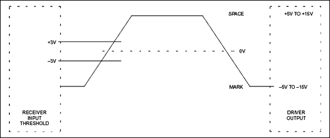 --- _electrical_ characteristics: - **high** level [**logical `0`**] ("marking") → `+5V` to `+15V` - **low** level [**logical `1`**] ("spacing") → `-5V` to `-15V` --- _electrical_ characteristics: - **high** level [**logical `0`**] ("marking") → `+5V` to `+15V` (`+3V` to `+15V`) - **low** level [**logical `1`**] ("spacing") → `-5V` to `-15V` (`-3V` to `-15V`) --- _mechanical_ interfaces, i.e., the _pin connector_: <img src="img/embedded_arch/comms/rs232_pins.gif" width="800"> --- ## synchronous communication between → **master** (or **main**) and a **slave** (or **sub**) --- ## synchronous | I<sup>2</sup>C Inter-Integrated Circuit (I<sup>2</sup>C/I2C/IIC) --- ## synchronous | I<sup>2</sup>C Inter-Integrated Circuit (I<sup>2</sup>C/I2C/IIC) - synchronous - multi-controller/multi-target - single-ended - serial communication bus --- ## I<sup>2</sup>C - connecting low-power integrated circuits → microcontrollers - for short distances or _intra-board communication_ --- ## I<sup>2</sup>C - connecting low-power integrated circuits → microcontrollers - for short distances or _intra-board communication_ - can control a **network** of chips → only **two** pins - serial data line - serial clock line --- ## I<sup>2</sup>C - connecting low-power integrated circuits → microcontrollers - for short distances or _intra-board communication_ - can control a **network** of chips → only **two** pins - serial data line - serial clock line - **unique** I2C address → serial data line --- ## I<sup>2</sup>C | signals --- ## I<sup>2</sup>C | signals |line|voltage| description| |------|-------|-------| | serial data line (SDL) | `+5V` | transmit data to or from target devices | --- ## I<sup>2</sup>C | signals |line|voltage| description| |------|-------|-------| | serial data line (SDL) | `+5V` | transmit data to or from target devices | | serial clock line (SCL) | `+3V` | synchronously clock data in or out <br> of the target device | || --- ## I<sup>2</sup>C | signals 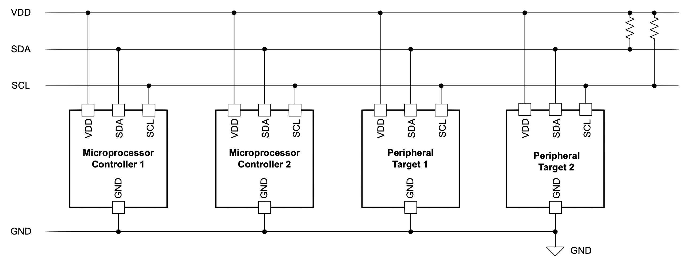 --- ## I<sup>2</sup>C | communication details | condition | description | |-----------------|-------| | I2C `START`| controller first pulls SDL low, then pulls SCL low | | I2C `STOP` | SCL releases high, then SDL releases high | || --- ## I<sup>2</sup>C | communication details | condition | description | |-----------------|-------| | I2C `START`| controller first pulls SDL low, then pulls SCL low | | I2C `STOP` | SCL releases high, then SDL releases high | || 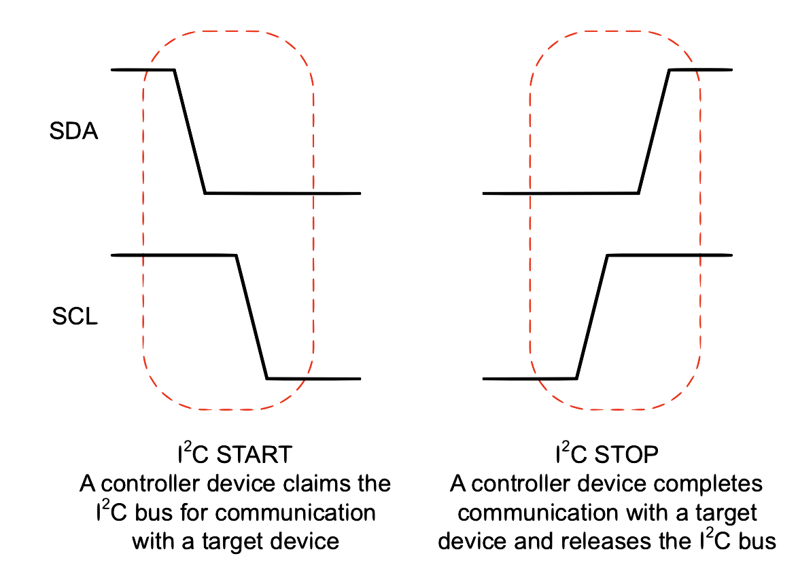 --- ## I<sup>2</sup>C | frames communication split into **frames** --- ## I<sup>2</sup>C | frames communication split into **frames** - first → `START` --- ## I<sup>2</sup>C | frames communication split into **frames** - first → `START` - communciation start → controller sends `ADDRESS_FRAME` --- ## I<sup>2</sup>C | frames communication split into **frames** - first → `START` - communciation start → controller sends `ADDRESS_FRAME` - followed by → one/more `DATA_FRAME`s --- ## I<sup>2</sup>C | frames communication split into **frames** - first → `START` - communciation start → controller sends `ADDRESS_FRAME` - followed by → one/more `DATA_FRAME`s - each frame gets → `ack` bit --- ## I<sup>2</sup>C | frames communication split into **frames** - first → `START` - communciation start → controller sends `ADDRESS_FRAME` - followed by → one/more `DATA_FRAME`s - each frame gets → `ack` bit <br> <br> example: 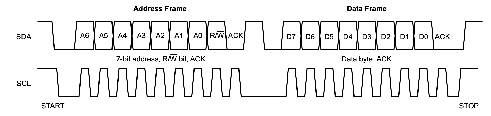 --- ## GPIO general-purpose I/O pins --- ## GPIO general-purpose I/O pins - **signal pins** --- ## GPIO general-purpose I/O pins - **signal pins** - digital I/O operations --- ## GPIO general-purpose I/O pins - **signal pins** - digital I/O operations - **no predefined purpose** → by design! - developers can **customize** them --- ## GPIO GPIO pins can, - be enabled or disabled - configured to be input or output - be used as "interrupt" lines Note: - input values are readable, often with a 1 representing a high voltage, and a 0 representing a low voltage. - input GPIO pins can be used as "interrupt" lines, which allow a peripheral board connected via multiple pins to signal to the primary embedded board that it requires attention. - output pin values are both readable and writable --- ## GPIO | implementation multiple ways to implement GPIO: --- ## GPIO | implementation multiple ways to implement GPIO: - as a **primary** function of the microcontrollers --- ## GPIO | implementation multiple ways to implement GPIO: - as a **primary** function of the microcontrollers - as an **accessory** to the chip --- ### GPIO | programming --- ### GPIO | programming - pin states → exposed via different interfaces --- ### GPIO | programming - pin states → exposed via different interfaces, _e.g.,_ - **memory-mapped I/O** peripherals - dedicated I/O port instructions --- ### GPIO | programming - pin states → exposed via different interfaces, _e.g.,_ - **memory-mapped I/O** peripherals - dedicated I/O port instructions - input values can be used as interrupts (**IRQs**) --- ## GPIO | examples |Intel 8255|PIC microchip|ASUS Tinker| |------|-------|---------| |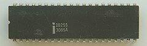 |<img src="img/embedded_arch/comms/gpio_microchip_PIC18F8720.jpg" width="200"> | 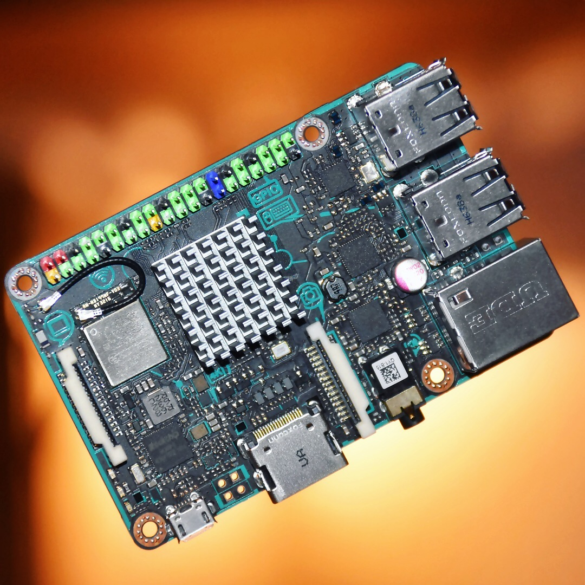 | |24 GPIO pins |29 GPIO pins| 28 GPIO pins| || --- ## CAN controller area network --- ## CAN controller area network - vehicle bus standard --- ## CAN controller area network - vehicle bus standard - efficient communication between ECUs --- ## CAN | properties - broadcast-based - message-oriented - arbitration → data integrity/prioritization - **does not** need host controller Note: - a "message" is discrete data that can be moved from one node to another - NOT a sequence of bytes --- ## CAN | physical setup two-wire bus: ||| |-----|------| |CAN high| yellow| |CAN low | green| || --- ## CAN | physical setup ||| |------|--------| | 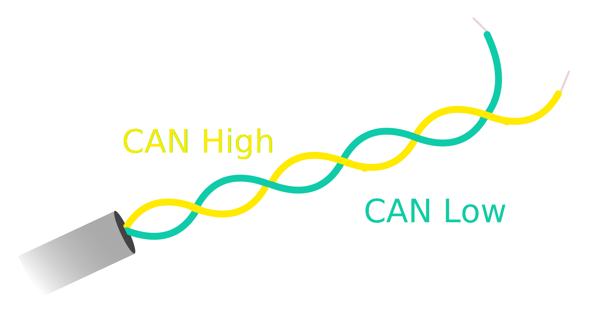 | | |CAN wiring || || --- ## CAN | physical setup ||| |------|--------| | | 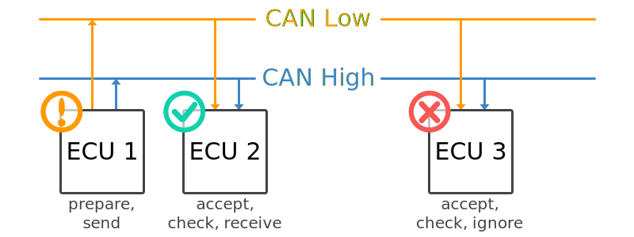 | |CAN wiring | multi-ecu CAN setup| || --- ## CAN | ECU --- ## CAN | ECU <table> <tr> <th>internal architecture</th> </tr> <tr> <td> 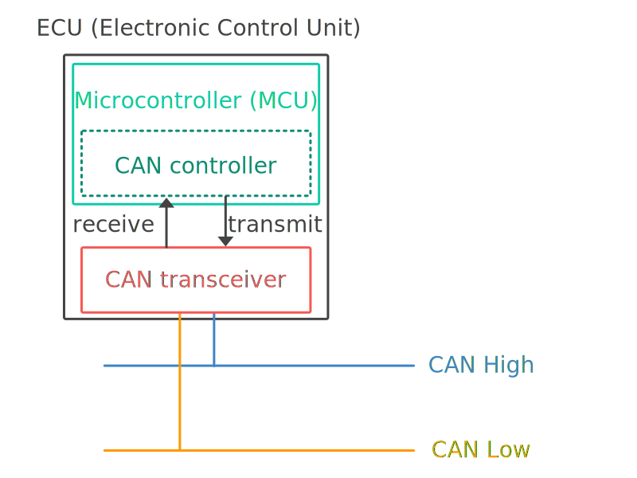 </td> </tr> <tr> <td></td> <td></td></tr> </table> --- ## CAN | ECU <table> <tr> <th>components</th> <th>internal architecture</th> </tr> <tr> <td> <ul> <li><b>microcontroller</b> to interpret/send out CAN messages</li> </ul> </td> <td> </td> </tr> <tr> <td></td> <td></td></tr> </table> --- ## CAN | ECU <table> <tr> <th>components</th> <th>internal architecture</th> </tr> <tr> <td> <ul> <li><b>microcontroller</b> to interpret/send out CAN messages</li> <li><b>CAN controller</b> ensures all communication adheres to CAN protocols</li> </ul> </td> <td> </td> </tr> <tr> <td></td> <td></td></tr> </table> --- ## CAN | ECU <table> <tr> <th>components</th> <th>internal architecture</th> </tr> <tr> <td> <ul> <li><b>microcontroller</b> to interpret/send out CAN messages</li> <li><b>CAN controller</b> ensures all communication adheres to CAN protocols</li> <li><b>CAN transceiver</b> connects CAN controller to the physical wires</li> </ul> </td> <td> </td> </tr> <tr> <td></td> <td></td></tr> </table> --- ## CAN | ECU - **any** ECU can broadcast on the CAN bus --- ## CAN | ECU - **any** ECU can broadcast on the CAN bus - accepted by **all** ECUs --- ## CAN | ECU - **any** ECU can broadcast on the CAN bus - accepted by **all** ECUs - **each** ECU → act/ignore message --- ## CAN | ECU - **any** ECU can broadcast on the CAN bus - accepted by **all** ECUs - **each** ECU → act/ignore message > **security** implications? --- ## CAN | connectors - no "standard" CAN connector --- ## CAN | connectors - no "standard" CAN connector - **CAN Bus DB9** → _de facto_ standard <br> 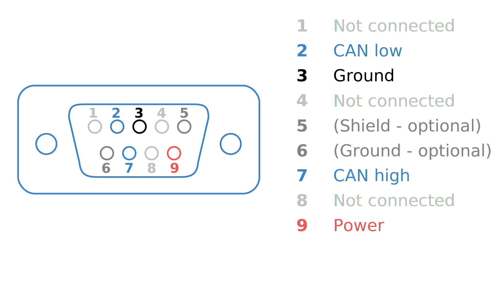 --- ## CAN | communication protocols --- ## CAN | communication protocols <table> <tr> <th>relation to OSI stack</th> </tr> <tr> <td> <img src="img/embedded_arch/comms/can-bus-osi-model-7-layer-iso-11898-physical-data.svg" width="750"> </td> </tr> <tr> <td></td> <td></td></tr> </table> --- ## CAN | communication protocols <table> <tr> <th>layer</th> <th>relation to OSI stack</th> </tr> <tr> <td> <ul> <li><b>data link</b>: CAN frame formats, <br>error handling, data transmission, <br>data integrity</li> </ul> </td> <td> <img src="img/embedded_arch/comms/can-bus-osi-model-7-layer-iso-11898-physical-data.svg" width="750"> </td> </tr> <tr> <td></td> <td></td></tr> </table> --- ## CAN | communication protocols <table> <tr> <th>layer</th> <th>relation to OSI stack</th> </tr> <tr> <td> <ul> <li><b>data link</b>: CAN frame formats, <br>error handling, data transmission, <br>data integrity</li> <li><b>physical</b>: cable types, <br>electrical signal levels, <br>node requirements, <br>cable impedance, etc.</li> </ul> </td> <td> <img src="img/embedded_arch/comms/can-bus-osi-model-7-layer-iso-11898-physical-data.svg" width="750"> </td> </tr> <tr> <td></td> <td></td></tr> </table> --- ## CAN | frames **all** communication → **CAN frames** <img src="img/embedded_arch/comms/CAN-bus-frame-standard-message-SOF-ID-RTR-Control-Data-CRC-ACK-EOF.svg" width="1100"> Note: - RTR: The Remote Transmission Request indicates whether a node sends data or requests dedicated data from another node - Control: The Control contains the Identifier Extension Bit (IDE) which is a 'dominant 0' for 11-bit. It also contains the 4 bit Data Length Code (DLC) that specifies the length of the data bytes to be transmitted (0 to 8 bytes) --- ## CAN | higher-order protocols for various applications/domains --- ## CAN | higher-order protocols for various applications/domains |protocol|description| |--------|-----------| |[OBD2](https://www.csselectronics.com/pages/obd2-explained-simple-intro) | on-board diagnostics in cars/trucks| |[UDS](https://www.csselectronics.com/pages/uds-protocol-tutorial-unified-diagnostic-services) | Unified Diagnostic Services (UDS) in automotive ECUs| |[CCP/XCP](https://www.csselectronics.com/pages/ccp-xcp-on-can-bus-calibration-protocol) | embedded control/industrial automation _interoperability_| |[J1939](https://www.csselectronics.com/pages/j1939-explained-simple-intro-tutorial) | for heavy-duty vehicles | |[2000](https://www.csselectronics.com/pages/nmea-2000-n2k-intro-tutorial )| maritime industry to connect engines, instruments, sensors| |[ISOBUS](https://www.csselectronics.com/pages/isobus-introduction-tutorial-iso-11783)| agriculture/forestry machinery, plug and play integration | || Note: - CCP/XCP: interoperability between CAN devices - ISOBUS: between vehicles/implements, _across brands_ --- ### embedded communications | others |protocol|links| |--------|------| |USB | How USB works: [part 1](https://www.circuitbread.com/tutorials/how-usb-works-introduction-part-1), [part2](https://www.circuitbread.com/tutorials/how-usb-works-communication-protocol-part-2), [part 3](https://www.circuitbread.com/tutorials/how-usb-works-enumeration-and-configuration-part-3); [USB in a Nutshell (very detailed)](https://www.beyondlogic.org/usbnutshell/usb1.shtml).| |Ethernet | [Reliable Embedded Ethernet](https://www.embedded.com/implement-reliable-embedded-ethernet-connectivity/), [Embedded Ethernet and Internet (book, online)](https://www.google.com/books/edition/_/3ZPPBgAAQBAJ?hl=en&gbpv=1&pg=PA1)| |WiFi | [WiFi Sensing on the Edge (paper)](https://ebulutvcu.github.io/COMST22_WiFi_Sensing_Survey.pdf) | |Bluetooth| [Bluetooth Basics](https://learn.sparkfun.com/tutorials/bluetooth-basics/all), [Bluetooth Low Energy](https://novelbits.io/bluetooth-low-energy-ble-complete-guide/) | |Radio| [Embedded Development with GNU Radio](https://wiki.gnuradio.org/index.php/Embedded_Development_with_GNU_Radio)| || --- ## embedded communications read [**online textbook**](https://autonomy-course.github.io/textbook/autonomy-textbook.html#communication-and-io) for details on these and others (_e.g.,_ JTAG) --- ## putting it all together... --- ## putting it all together... ...Raspberry Pi and Navio2 --- <!-- .slide: data-background="white" --> ## raspberry Pi includes many components/standards discussed so far... 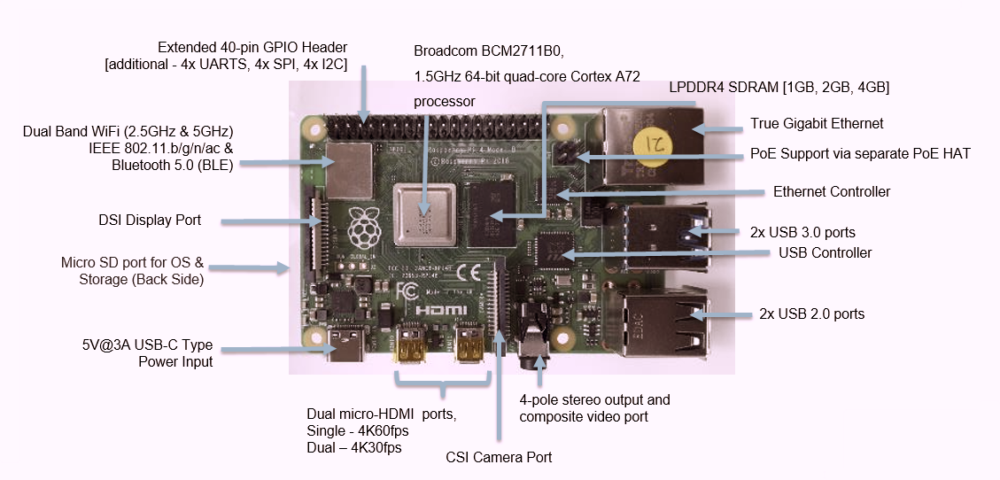 --- ## raspberry Pi | components --- ## raspberry Pi | components |component | description/details| |----------|--------------------| |processor | Broadcomm **BCM2711**, <br> **Quad core** Cortex-A72 (ARM v8) 64-bit SoC at 1.8GHz| --- ## raspberry Pi | components |component | description/details| |----------|--------------------| |processor | Broadcomm **BCM2711**, <br> Quad core Cortex-A72 (ARM v8) 64-bit SoC at 1.8GHz| |memory | 1GB, 2GB, 4GB or 8GB LPDDR4-3200 SDRAM| --- ## raspberry Pi | components |component | description/details| |----------|--------------------| |processor | Broadcomm **BCM2711**, <br> Quad core Cortex-A72 (ARM v8) 64-bit SoC at 1.8GHz| |memory | 1GB, 2GB, 4GB or 8GB LPDDR4-3200 SDRAM| |network | Wifi (2.4/5.0 GHz), Gigabit ethernet, Bluetooth/BLE| --- ## raspberr Pi | components |component | description/details| |----------|--------------------| |processor | Broadcomm **BCM2711**, <br> Quad core Cortex-A72 (ARM v8) 64-bit SoC at 1.8GHz| |memory | 1GB, 2GB, 4GB or 8GB LPDDR4-3200 SDRAM| |network | Wifi (2.4/5.0 GHz), Gigabit ethernet, Bluetooth/BLE| |I/O | 40 pin GPIO, USB 3.0/2.0/C| --- ## raspberry Pi | components |component | description/details| |----------|--------------------| |processor | Broadcomm **BCM2711**, <br> Quad core Cortex-A72 (ARM v8) 64-bit SoC at 1.8GHz| |memory | 1GB, 2GB, 4GB or 8GB LPDDR4-3200 SDRAM| |network | Wifi (2.4/5.0 GHz), Gigabit ethernet, Bluetooth/BLE| |I/O | 40 pin GPIO, USB 3.0/2.0/C| |storage | Micro-SD Card | --- ## raspberry Pi | components |component | description/details| |----------|--------------------| |processor | Broadcomm **BCM2711**, <br> Quad core Cortex-A72 (ARM v8) 64-bit SoC at 1.8GHz| |memory | 1GB, 2GB, 4GB or 8GB LPDDR4-3200 SDRAM| |network | Wifi (2.4/5.0 GHz), Gigabit ethernet, Bluetooth/BLE| |I/O | 40 pin GPIO, USB 3.0/2.0/C| |storage | Micro-SD Card | |misc | micro-hdmi, stereo a/v, displayport, camera port, power| --- ## raspberry Pi | components |component | description/details| |----------|--------------------| |processor | Broadcomm **BCM2711**, <br> Quad core Cortex-A72 (ARM v8) 64-bit SoC at 1.8GHz| |memory | 1GB, 2GB, 4GB or 8GB LPDDR4-3200 SDRAM| |network | Wifi (2.4/5.0 GHz), Gigabit ethernet, Bluetooth/BLE| |I/O | 40 pin GPIO, USB 3.0/2.0/C| |storage | Micro-SD Card | |misc | micro-hdmi, stereo a/v, displayport, camera port, power| |os | [Raspberry Pi OS](https://www.raspberrypi.com/software/) (formerly called Raspbian)| || --- ## navio2 --- ## navio2 a "hat" → adds to Pi: - autopilot functionality - multiple sensors --- <!-- .slide: data-background="white" --> ## navio2 | architecture 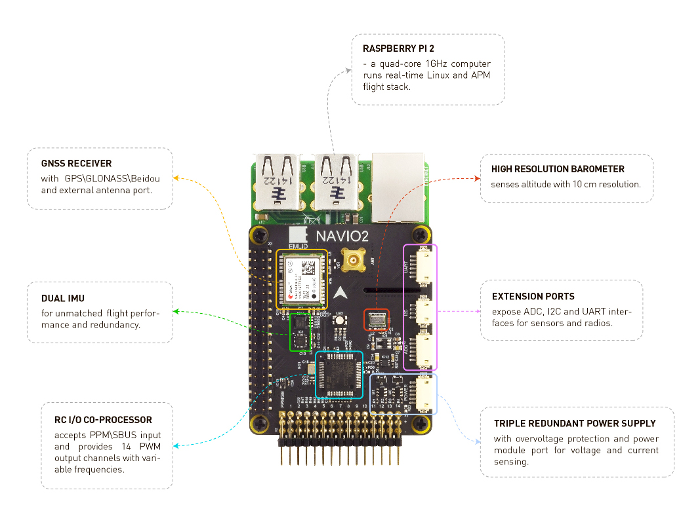 --- ## navio2 | architecture |component|description/details| |---------|-------------------| |GNSS receiver | for GPS signals| --- ## navio2 | architecture |component|description/details| |---------|-------------------| |GNSS receiver | for GPS signals| |high-precision barometer| for measuring pressure (and altitude)| --- ## navio2 | architecture |component|description/details| |---------|-------------------| |GNSS receiver | for GPS signals| |high-precision barometer| for measuring pressure (and altitude)| |(dual) IMU | two 9 DOF with gyroscope, accelerometer, magnetometer, each| --- ## navio2 | architecture |component|description/details| |---------|-------------------| |GNSS receiver | for GPS signals| |high-precision barometer| for measuring pressure (and altitude)| |(dual) IMU | two 9 DOF with gyroscope, accelerometer, magnetometer, each| |RC I/O co-processor | PWM, ADC, SBUS, PPM | --- ## navio2 | architecture |component|description/details| |---------|-------------------| |GNSS receiver | for GPS signals| |high-precision barometer| for measuring pressure (and altitude)| |(dual) IMU | two 9 DOF with gyroscope, accelerometer, magnetometer, each| |RC I/O co-processor | PWM, ADC, SBUS, PPM | |extension ports | ADC, I2C, UART | --- ## navio2 | architecture |component|description/details| |---------|-------------------| |GNSS receiver | for GPS signals| |high-precision barometer| for measuring pressure (and altitude)| |(dual) IMU | two 9 DOF with gyroscope, accelerometer, magnetometer, each| |RC I/O co-processor | PWM, ADC, SBUS, PPM | |extension ports | ADC, I2C, UART | |power supply | triple redundant | || --- navio has some issues with software support... --- navio has some issues with software support... ...so we use the **RoverPiHat** --- <!-- .slide: data-background="white" --> ## roverpihat <img src="img/embedded_arch/RoverPiHAT_TOP.jpeg" width="800"> --- <!-- .slide: data-background="white" --> ## roverpihat <div class="multicolumn"> <div> <br> <br> <img src="img/embedded_arch/RoverPiHAT_TOP.jpeg" width="500"> </div> <div> <br> <br> <br> <br> <br> <br> "ready-to-fly" autopilot platform </div> </div> --- ## roverpihat | architecture --- ## roverpihat | architecture |component|description/details| |---------|-------------------| | **IMU (inertial measurement unit)** | 3-axis accelerometer, gyroscope, magnetometer (MPU6050)| --- ## roverpihat | architecture |component|description/details| |---------|-------------------| | **IMU (inertial measurement unit)** | 3-axis accelerometer, gyroscope, magnetometer (MPU6050)| | **RGB LED** | programmable RGB LED| --- ## roverpihat | architecture |component|description/details| |---------|-------------------| | **IMU (inertial measurement unit)** | 3-axis accelerometer, gyroscope, magnetometer (MPU6050)| | **RGB LED** | programmable RGB LED| | **rover connections** | connectors for motors, servos, other components| --- ## roverpihat | architecture |component|description/details| |---------|-------------------| | **IMU (inertial measurement unit)** | 3-axis accelerometer, gyroscope, magnetometer (MPU6050)| | **RGB LED** | programmable RGB LED| | **rover connections** | connectors for motors, servos, other components| | **UART port** | UART to Pi (direct shell access)| --- ## roverpihat | architecture |component|description/details| |---------|-------------------| | **IMU (inertial measurement unit)** | 3-axis accelerometer, gyroscope, magnetometer (MPU6050)| | **RGB LED** | programmable RGB LED| | **rover connections** | connectors for motors, servos, other components| | **UART port** | UART to Pi (direct shell access)| | **ultrasonic port** | ultrasonic sensor port| ||